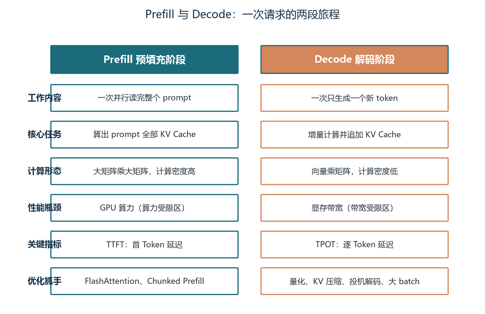
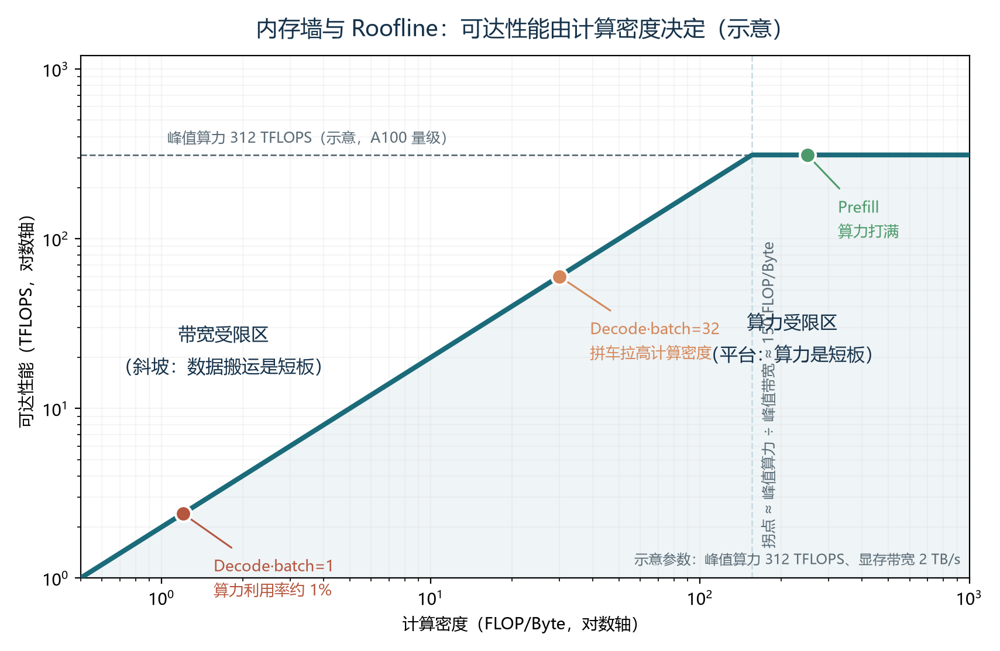
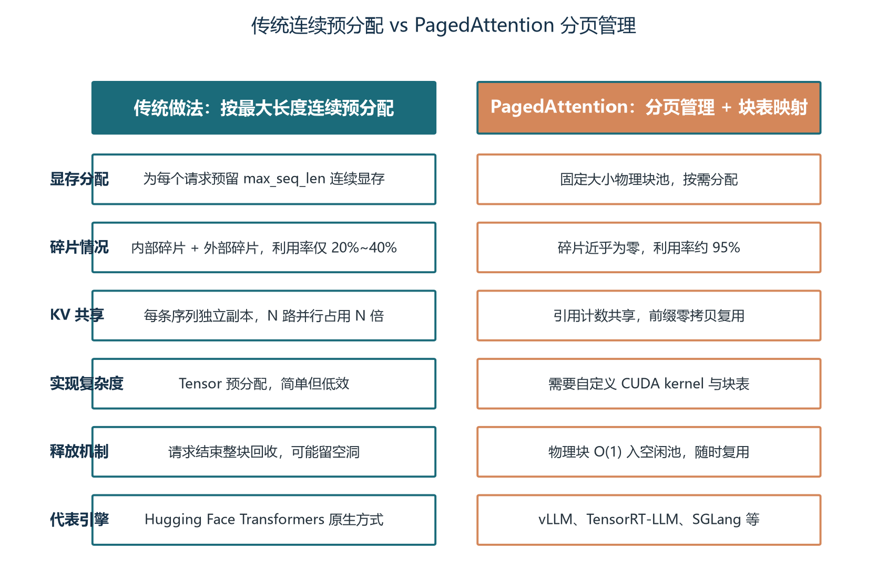
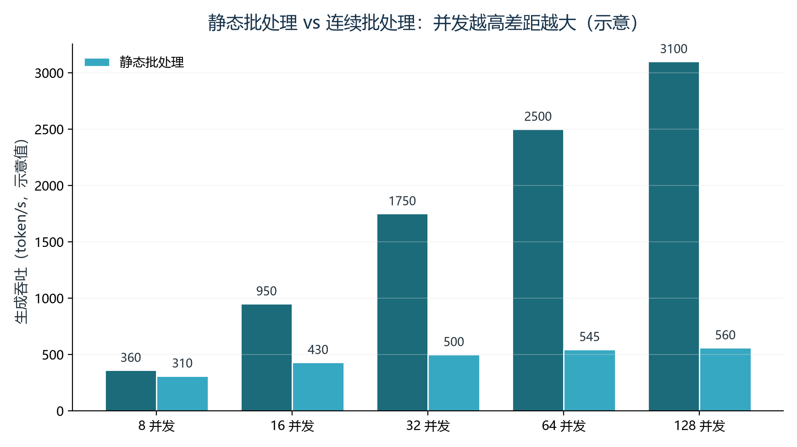
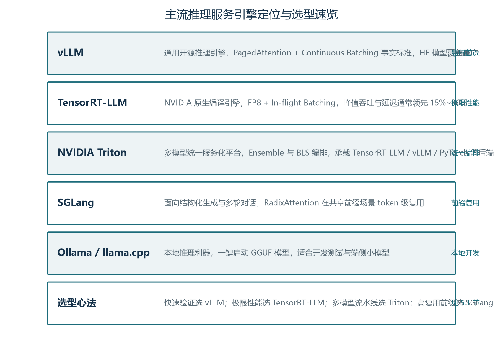
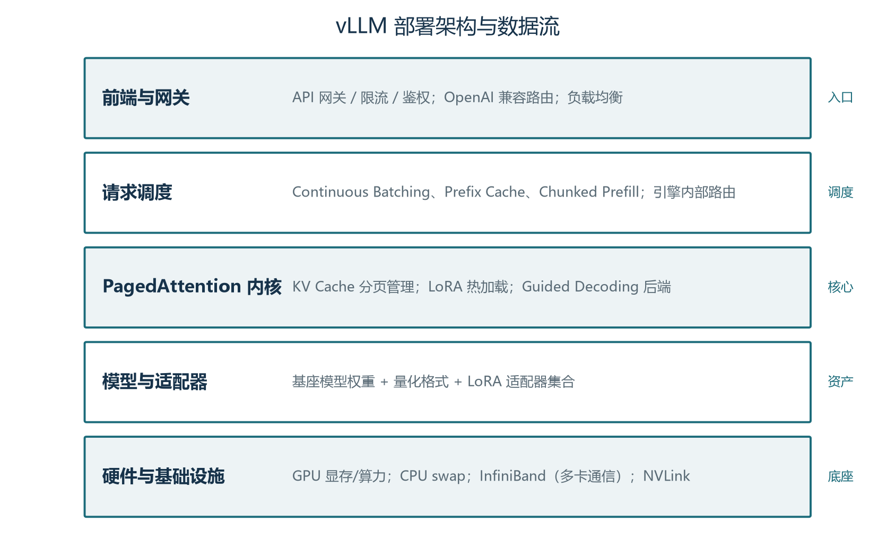

前言：让大脑跑起来
上一卷我们解决了"用哪个大脑"的问题：稠密模型与混合专家的取舍、推理模型与思考预算、上下文长度的策略选择。但选中了一个优秀的大脑，并不等于大脑就能跑得动、跑得快、跑得省。本卷将回答三件事：为什么同样的模型在不同服务下能差出一个数量级的吞吐？是什么让 Agent 多轮对话的成本居高不下？团队应当如何在 vLLM、TensorRT-LLM、SGLang 等引擎中做选型？这一卷位于整套手册"打地基"阶段的最后一节，它向上承接大脑的结构与原理，向下连接成本层的量化与压缩（卷06），并直接决定 Agent 应用层的单次调用成本与并发上限。
推理服务是 Agent 工程里被低估的"暗物质"。许多团队在模型选型上精挑细选，对提示词与 RAG 反复打磨，最后却栽在最朴素的问题上：单卡 A100 跑 13B 模型只有个位数的并发、TTFT 抖动让交互体验如老牛拉车、多轮 Agent 会话一晚上烧掉数百万 token 却查不出原因。这些问题的根因不在算法层，而在系统层：显存怎么管、请求怎么排、算力怎么分、解码怎么省。本卷要做的，就是把这层"看不见的基础设施"搬到阳光下，让你像看懂模型结构一样看懂推理引擎。
学习本卷需要一个思维切换：暂时忘掉"模型是怎么推理的"——那是卷02到卷04的事；改为关心"模型是如何被调度与执行的"。同一段 KV Cache，是连续存放还是分页存放，吞吐可以差三倍；同一批请求，是凑齐再算还是边算边补，并发能力可以差十倍；同一个解码过程，是逐 token 串行还是投机并行，小 batch 延迟可以差两倍半。当你习惯用"调度粒度""访存密度""前缀复用率"这类系统语言思考问题，就具备了与推理引擎工程师对话的基础。
学完本卷，你将能够：
- 解释自回归生成与 Prefill/Decode 两阶段的本质差异，画出 Roofline 模型中两者各自所处的位置；
- 用公式估算任意模型的 KV Cache 显存占用，理解 PagedAttention 与 vLLM 的核心机制；
- 说出 Continuous Batching、Prefix Caching、Chunked Prefill 三件套的作用原理与对 Agent 多轮的价值；
- 描述 Speculative Decoding、MLA、KV Cache 量化等进阶优化的工作机制；
- 给出 vLLM、TensorRT-LLM、SGLang、Ollama 等引擎的选型决策框架，并列出 Agent 服务部署的关键监控指标。
本卷有较多命令、参数与代码示例。建议阅读时把第四章的命令段当作"配置字典"——首次通读抓住主线，后续部署时再回查具体参数。表5-1 的引擎对比、第五章的部署清单是高频回访对象，建议标记书签。
关于本卷与相邻卷的衔接做一句说明：本卷讲推理引擎的系统优化，卷06 接着讲量化与压缩工程——前者关注"调度与执行"，后者关注"权重与激活的精度"。两者紧密相关：量化方案决定了引擎内核选择（FP8 KV Cache 需 H100，INT4 需 AWQ 内核），引擎又决定了量化收益能否兑现。建议连续阅读，也可以把卷06当作本卷的工程延伸。
第一章 推理为什么慢：自回归本质与内存墙
1.1 自回归生成：一次只生成一个 token
要理解推理服务的瓶颈，必须从大语言模型最朴素的生成方式说起。当前主流的大模型——GPT、Claude、Qwen、DeepSeek——全部采用 Transformer Decoder-Only 架构，其生成过程是典型的自回归：模型先读完整段 prompt，计算出所有输入 token 的隐藏状态，并据此采样出第一个输出 token；接着把这个 token 拼回输入末尾，再计算下一步。不断重复，直到生成结束符或达到最大长度。
这个循环看似平淡，每一步却都要对历史所有 token 做一次完整的注意力计算。生成第 t 个 token 时，查询向量 Q 的规模只有一个 token，而键 K 与值 V 包含了从 prompt 第一个字到当前已生成 token 的全部历史。假设上下文已累积到 4000 个 token，每生成一个新 token 就要读取近 4000 个历史 token 的 K、V 做注意力。K、V 不缓存的话，每一步都要重新计算——这在工程上完全不可接受。
解决思路是显然的：把历史 K、V 缓存下来，生成新 token 时直接复用。这就是 KV Cache 的核心思想，也是推理服务一切优化的起点。可以把它想象成读书时的书签：模型每读完一段，就记下这段讲了什么；下次续读时，不用从头翻起。卷02 已经讲过 KV Cache 的数学原理，本卷关心的是它给系统带来的工程问题——显存爆炸。

1.2 Prefill 与 Decode：一次请求的两段旅程
自回归生成在系统层面其实由两个截然不同的阶段组成，理解这种二分是后续所有优化讨论的前提。Prefill 阶段是处理 prompt 的"一口气"阶段：模型把整段输入并行过一遍，同时算出所有 prompt token 的 K、V 缓存，并把第一个输出 token 一次算完。这个阶段矩阵乘法的维度大、计算密度高，处于算力受限区域，主要瓶颈是 GPU 的浮点运算能力。Decode 阶段是逐 token 生成的"细水长流"阶段：每生成一个新 token，Q 只与该位置对应的一个向量，而 K、V 是累积起来的所有历史。这个阶段矩阵维度小、计算密度极低，处于带宽受限区域，主要瓶颈是显存带宽——数据搬运的速度跟不上计算速度。
这种二分在工程指标上体现得淋漓尽致。Prefill 阶段的关键指标是 TTFT（Time To First Token），即从请求到达至首个 token 返回的延迟——它决定了用户第一次看到字的时间，影响"加载中"的体验。Decode 阶段的关键指标是 TPOT（Time Per Output Token），即平均生成每个 token 的延迟——它决定了用户看到字的速度，影响"打字机"的流畅度。把两者乘以输出长度再加 TTFT，就得到端到端响应延迟。延迟优化的核心，是分别压低这两个阶段各自的瓶颈。
图1-1 用对比表的形式把两阶段的所有差异一次说清。工作内容上，Prefill 一次性读完整个 prompt 并行算出所有 K、V；Decode 每步只生成一个新 token 并追加 K、V。计算形态上，Prefill 是"大矩阵乘大矩阵"，充分利用 Tensor Core；Decode 是"向量乘矩阵"，计算密度极低。优化方向也由此分化：Prefill 应关注 FlashAttention、融合 kernel、TP 并行；Decode 应关注量化、KV Cache 压缩、前缀复用、投机解码。两阶段的优化策略甚至会相互干扰——这正是第五章 PD 分离架构要解决的核心矛盾。
1.3 内存墙与 Roofline 模型
现代 GPU 的算力增长速度长期快于显存带宽增长速度。当程序每读取一字节数据所能完成的计算量低于某个阈值时，性能就会被显存带宽卡死，而无法发挥 GPU 的峰值算力。这就是"内存墙"（Memory Wall）。LLM 推理的 Decode 阶段正是这种情况的典型：每生成一个 token 需要读取模型权重（固定大小）和全部历史 KV Cache（随长度线性增长），当上下文较长时，读取 KV Cache 的带宽需求远远超过计算需求，GPU 计算单元在等数据。
Roofline 模型给这种关系画了一张图。它用一条折线描述可达性能：可达性能 = min(峰值算力，峰值带宽 × 计算密度)。横轴是计算密度（FLOP/Byte），纵轴是可达性能（TFLOPS）。当计算密度低时，性能受带宽限制、随密度线性上升（斜坡段）；当计算密度高到一定阈值，性能受算力限制、保持平台（平台段）；斜坡与平台的拐点就在"峰值算力 ÷ 峰值带宽"的位置。
图1-2 是一张带数据的 Roofline 示意。横轴 0.5 到 1000 FLOP/Byte，纵轴 1 到 1200 TFLOPS，假设 A100 量级的峰值算力 312 TFLOPS、显存带宽 2 TB/s，拐点约在 156 FLOP/Byte。三个典型工作点被画在图上：Decode·batch=1 落在斜坡最左下角，算力利用率约 1%——这就是"小 batch 自回归慢得令人发指"的量化解释；Decode·batch=32 沿斜坡向上爬到中段，计算密度被"拼车效应"显著抬高；Prefill 已经抵达算力平台，算力被打满。

这张图解释了所有后续优化的原理。Decode 阶段想加速，要么降低带宽需求（量化、KV Cache 压缩、前缀复用），要么提高带宽（新一代 HBM 内存），要么提高计算密度（大 batch 拼车）；Prefill 阶段想加速，要么提高算力（更快的 GPU、更大的 TP 并行），要么提高计算效率（FlashAttention、融合 kernel）。"投机解码"的本质也是在不增加带宽的前提下，把小 batch 的 Decode 拉向算力受限区——这一点第四章展开。
1.4 KV Cache：推理显存的"头号大户"
KV Cache 的存在让 Decode 阶段得以避免重算历史 K、V，却也让显存成为推理服务最大的成本项。其单序列显存占用可近似表示为：Memory_KV = 2 × L × H_k × d_h × T × sizeof(dtype)。其中 L 是层数、H_k 是 KV 头数、d_h 是头维度、T 是当前序列长度、sizeof(dtype) 是数据精度占用的字节数。公式里那个"2"来自 K 与 V 各一份。理解这个公式，就拿到了估算任意模型 KV 占用的钥匙。
以 LLaMA-2-13B 为例：40 层、40 个 KV 头、头维度 128，单条 2048 token 序列在 FP16 下需要约 1.68 GB 显存。再看 LLaMA-2-70B：80 层、8 个 KV 头（GQA 后从 64 头压缩到 8 头）、头维度 128，同样 2048 token 仅需约 0.67 GB——KV 头数的减少直接让 KV Cache 缩减为原来的 1/8。Qwen2-72B 同为 GQA 8 头，数值相近。这张表说明：模型规模越大，未必意味着 KV Cache 越大，关键看注意力变体选了什么——这是第四章 Attention 变体的伏笔。
表1-1 把这些估算结果整理在一起。值得留意的是单条 2048 token 的数字看起来都不算大，可一旦 batch 起来就完全变样：64 并发、平均 1024 token 时，仅 KV Cache 就可能超过 100 GB，远超单卡 80 GB 的容量上限。这也是为什么传统框架"为每个请求按最大长度预留一段连续显存"的做法会让大量请求 OOM——预分配长度远大于实际长度，浪费与碎片双重夹击。
| 模型 | 层数 L | KV 头数 H_k | 头维度 d_h | 单序列 KV Cache |
|---|---|---|---|---|
| LLaMA-2-7B | 32 | 32 | 128 | 约 0.84 GB |
| LLaMA-2-13B | 40 | 40 | 128 | 约 1.68 GB |
| LLaMA-2-70B | 80 | 8（GQA） | 128 | 约 0.67 GB |
| Qwen2-72B | 80 | 8（GQA） | 128 | 约 0.67 GB |
还有一个常被忽略的隐性消费：除了 KV Cache 自身，模型权重、激活值、CUDA context、临时 buffer 同样占用显存。一块 80 GB 的 A100，推理 13B 模型时通常只能把 gpu_memory_utilization 设到 0.85~0.92——剩下的空间要留给这些"看不见的租客"。这也是为什么显存管理不能仅盯 KV Cache，要做整体预算。
工程师在估算 KV Cache 时还容易踩进两个坑。第一个是 dtype_size 的精度陷阱：很多人误以为 BF16 与 FP16 占同样的 2 字节、INT8 占 1 字节、FP8 占 1 字节，但 FP8 实际存在 E4M3 与 E5M2 两种格式，存储时多数实现配 1 字节；INT4 的存储通常需要配合 per-channel 或 per-group 的缩放因子表，实际占用介于 4~6 bit 之间。第二个坑是 GQA 与 MQA 的"头数错觉"：LLaMA-2-70B 表面上有 64 个查询头，但通过 GQA 只保留了 8 个 KV 头——如果不查模型 config 而按 64 个头估算，结果会偏差 8 倍。养成"看模型 config、看注意力变体、看 dtype 格式"的三看习惯，是工程估算的基本功。
1.5 batch 越大吞吐越高，但延迟也有代价
Roofline 图已经暗示了答案：增大 batch size 让 Decode 阶段的多个请求可以"拼车"读取权重，单位 token 的权重读取次数减少，计算密度上升，GPU 越来越接近算力受限区。经验上看，吞吐随 batch size 单调上升，直到硬件资源被吃满。但天下没有免费的午餐：batch 越大，新请求需要排队等待凑满 batch，TTFT 也会被拉长；batch 满载后，TPOT 也可能因为排队而出现尾部抖动。
这就是延迟与吞吐的帕累托前沿：在不同 batch size、并发度、量化精度下做 benchmark，可以画出一条"延迟-吞吐"的曲线，业务方根据 SLA 选择前沿上的合适点。低延迟优先的代码补全、Agent 实时交互场景，会选择较小的 batch、较高的量化精度、启用 CUDA Graph 与投机解码；高吞吐优先的批量标注、离线生成场景，会选择较大的 batch、启用 FP8/INT8 量化、容忍一定的尾延迟。
连续批处理（Continuous Batching）的工程价值正是在这个帕累托前沿上又向前推了一段：它不要求请求同步到达、同步离开，而是让每个生成 step 结束后检查 batch 组成——完成的请求立即释放槽位，新请求立即补上，GPU 始终保持接近满载的"动态满员"状态。这是第三章的主题，但请记住这一章埋下的伏笔：吞吐与延迟是一对跷跷板，连续批处理是这套权衡里最优雅的工程答案。
Decode 阶段慢在带宽而非算力——这是本卷几乎所有优化技术的出发点。读到这里请把这句话记住，后续每出现一项优化手段，都在脑中反问一句：它降低的是带宽需求，还是提高了计算密度？答得清楚，就算入了推理优化的门。
第二章 显存争夺战：KV Cache 的管理艺术
2.1 传统三大痛点：碎片、空等、访存低效
在 PagedAttention 与 Continuous Batching 出现之前，基于 Hugging Face Transformers 的服务框架存在三个结构性问题，几乎决定了"单卡 80 GB A100 跑 13B 模型并发吞吐只有每秒几条请求"的尴尬局面。第一个是显存过度预留与碎片化：为每个请求按最大序列长度预留一段连续显存，padding 浪费严重；请求长度不同导致释放后留下不连续空洞，新请求即使总空闲显存足够，也可能因找不到连续大块而 OOM。第二个是静态批处理的"队头阻塞"：固定数量的请求一起送入，必须等最长请求生成结束才统一返回；短请求早已完成，却被绑在 batch 里空跑，GPU 计算资源被浪费。第三个是注意力计算的低效 I/O：Decode 阶段每步都要从显存读取完整 K、V 张量，计算/访存比极低——以 1024 token 为例，Q 张量仅数 KB，K、V 总量却达数 MB，99% 以上的显存带宽都花在读取历史缓存上，GPU 算力被内存墙严重压制。
这三个问题环环相扣：碎片化限制了并发上限，并发低意味着 batch 起不来，batch 小又让访存比雪上加霜，最终形成"低吞吐、高延迟、高成本"的负反馈循环。打破这个循环需要从两个维度同时发力：把显存管理做精细（让更多请求并发），把调度粒度做细（让 GPU 始终满载）。PagedAttention 解决前者，Continuous Batching 解决后者，两者的代表实现都在 vLLM 中得到落地。
2.2 PagedAttention 的灵感：把虚拟内存搬进 GPU
PagedAttention 由 vLLM 团队（UC Berkeley LMSYS）在 2023 年提出，核心思想直接借鉴操作系统管理虚拟内存的方式。在操作系统中，进程看到的虚拟地址空间是连续的，但物理内存由离散的页帧组成，页表负责虚拟页到物理页帧的映射；只有当进程真正访问某一页时，系统才分配物理页帧。这种"按需、离散、可映射"的内存管理思路，正好对应 LLM KV Cache 的诉求。
类比到 LLM 推理：每个请求的逻辑 token 序列被划分为固定大小的"逻辑块"（logical block，默认 16 个 token）；GPU 显存中维护一个全局"物理块池"，每个物理块也恰好能存放 16 个 token 的 K、V；每个请求持有一张"块表"，记录其逻辑块到物理块的映射关系。物理块不要求在显存中连续排列，系统可以按需分配、按引用计数共享、按 LRU 淘汰——从根本上消除了"预分配长尾浪费"和"连续内存碎片化"两个问题。
这种设计的精妙之处在于四点。其一是按需分配：只有当一个逻辑块真正被写入 K、V 数据时，才从物理块池中取出一个空闲块。其二是非连续存储：逻辑上连续的 token 可以散落在任意物理块中，通过块表聚合访问。其三是低成本共享：多个序列共享前缀时，只需让它们的块表指向同一批物理块，用引用计数管理生命周期——并行采样 N 路不再需要 N 份 KV 副本。其四是低碎片：固定大小的物理块类似 slab allocator，分配与释放都是 O(1)，空闲块随时可被新请求使用。
2.3 PagedAttention 与传统做法的对比
图2-1 用对比表把两种显存管理方式的关键差异一次铺开。显存分配上，传统做法为每个请求预留 max_seq_len 连续显存，PagedAttention 改为固定大小物理块池、按需分配。碎片情况上，传统做法内部碎片加外部碎片、利用率仅 20%~40%，PagedAttention 碎片近乎为零、利用率约 95%。KV 共享上，传统方式每条序列独立副本、N 路并行占用 N 倍，PagedAttention 通过引用计数让前缀零拷贝复用。实现复杂度上，传统 Tensor 预分配简单但低效，PagedAttention 需要自定义 CUDA kernel 与块表。

这些差异带来的收益是可量化的：根据 vLLM 论文（OSDI 2023）与后续大量生产实践，显存利用率从传统方式的 20%~40% 提升至 95% 左右；相同 GPU 上可同时服务的并发请求数提升 2~4 倍；吞吐（token/s）提升数倍；prefix 共享场景下内存占用进一步下降。代价同样存在：自定义 CUDA kernel 的开发与维护成本高、block size 选择影响性能（过大增加内部浪费、过小增加管理开销）、极长上下文下块表本身也会占用少量显存。但总体上，对任何严肃的生产部署，这些代价都是值得的。
2.4 物理块大小：16 的工程折中
vLLM 默认 block size 为 16 个 token。为什么是 16？这是经过大量实验折中的结果。Block size 过小（如 4 或 8）会带来块表条目增多、attention kernel 需访问更多不连续物理块导致局部性下降、块管理器开销增加、引用计数管理复杂等连锁问题。Block size 过大（如 64 或 128）则会导致每个序列最后一个块内部浪费增加——例如 block size=128 时，一个 129 token 的序列需要 2 个块，第二个块只存 1 个 token，浪费近 99%；前缀共享的最小单位变大，短前缀无法共享；显存碎片问题重新凸显。
实践建议可以浓缩成一句话：对于上下文长度分布较均匀、以长文本为主的业务（如长文档分析），可尝试 block size=32 或 64；对于短对话、大量共享前缀的 Agent 场景，保持默认 16 或尝试 8。不同引擎提供不同的调参接口：vLLM 的 block size 在引擎初始化时设置、SGLang 的 Radix Tree 粒度可在运行时调整。最佳配置永远是实测出来的——但记住这条原则：业务长度分布与共享前缀比例决定了 block size 的甜点区间。
2.5 Copy-on-Write：共享前缀的零拷贝复用
在 LLM 服务中经常出现"同源多输出"的场景：同一个 prompt 生成多个独立输出（parallel sampling 或 n_best），或者使用 Beam Search 生成多条候选序列。这些序列的前缀 prompt 部分完全相同，因此它们的 KV Cache 也完全相同。传统实现需要为每条输出序列复制一份 prompt 的 KV Cache——以 2048 token 的 prompt 与 4 路并行采样为例，传统方式需 4 × 1.7 GB = 6.8 GB prompt KV Cache。
PagedAttention 的做法是 Copy-on-Write：所有序列的块表在 prompt 段指向同一批物理块，这些物理块的引用计数设为 N。当某个序列继续生成新 token 时，若新 token 仍落在共享前缀内，则不需要分配新块；一旦生成分叉，系统才为分叉的序列分配新的物理块，并将共享块的引用计数递减。PagedAttention 只需 1.7 GB，并在生成分叉后按实际长度增量分配。这种机制在 Beam Search 中同样有效：不同 beam 在初始几步共享 prompt 和已生成前缀，只有当 beam 间出现差异时才分裂。
这套机制对 Agent 场景尤其重要。Agent 的多轮对话中，每一轮都共享之前的历史 KV；RAG 的多查询场景中，多个问题共享同一个文档块前缀；Few-shot 提示词中，固定的示例部分只需计算一次。所有这些"共享前缀"通过 Copy-on-Write 实现接近零开销的复用——这一点将在第三章 Prefix Caching 处展开成更系统的工程能力。
块表自身也有工程细节值得展开。每个请求的块表结构类似一个动态数组，记录"逻辑块序号 → 物理块 ID"的映射。当请求长度增长到需要新物理块时，块表追加一个新条目；当请求结束时，块表逐条目释放物理块（引用计数减一并归还空闲池）。块表的元数据存放在 CPU 内存还是 GPU 显存取决于引擎实现——vLLM 选择把块表放在 CPU 内存以减少 GPU 显存占用，但这意味着每次 attention 计算都要做一次 CPU→GPU 的小数据同步，在极大 batch 时可能成为瓶颈。SGLang 选择把 Radix Tree 的部分元数据放在 GPU 上以减少同步开销，体现了"用空间换时间"的另一种工程权衡。
2.6 vLLM 的 BlockManager：分配、释放、抢占
PagedAttention 不是抽象概念，它在 vLLM 中由 BlockManager 模块（vllm/core/block_manager.py）具体落地。BlockManager 维护三个核心数据结构：物理块分配器（BlockAllocator）维护空闲块列表，分配时从队头取出一个块 ID、释放时把块 ID 追加回队尾；块表（BlockTable）为每个请求维护"逻辑块到物理块 ID"的列表，新 token 写入时若当前块未满就继续填充、满了就分配新块并追加；调度器则在每个 step 结束时检查请求完成情况，释放已完成的块，并决定是否需要抢占低优先级请求。
抢占策略的选择是生产调优的"暗坑"。当 GPU 显存吃紧、新请求又必须及时接入时，系统需要一种机制在不崩溃的前提下做取舍。Swap 策略倾向于保留 KV Cache、换到 CPU 内存以保命；Recompute 策略倾向于直接丢弃 KV Cache、恢复时重算 Prefill。两种策略没有绝对优劣：Swap 在 PCIe 带宽充裕（如 NVLink、CXL）时延迟更低；Recompute 在 CPU 内存紧张、PCIe 带宽拥塞时反而更快。生产环境通常根据硬件配置与业务特点选定一种，并通过 A/B 测试验证尾延迟与请求成功率的差异。
抢占（Preemption）是连续批处理必须面对的"硬场景"：当 GPU 显存不足、又有新请求到达时，系统如何决定取舍？vLLM 支持两种策略。Swap 策略将低优先级请求的 KV Cache 块换出到 CPU 内存，待其轮到执行时再换入，这会引入 CPU-GPU 数据传输开销但能避免请求被完全取消；Recompute 策略直接丢弃被抢占请求的 KV Cache，待其恢复时重新计算 Prefill，在 CPU 内存带宽紧张时重计算可能比换出更快。生产中选择哪种策略，取决于 CPU 内存大小、PCIe 带宽、Prefill 计算成本等因素。
PagedAttention 不是单点优化，它重塑了显存、调度、共享的整套工程接口。在 vLLM 之后，TensorRT-LLM 的 Paged KV Cache、SGLang 的 Radix Tree 都在不同程度上借鉴了同样的思想。学完这一章再去读 TensorRT-LLM 的源代码，你会发现许多"似曾相识"的设计——这就是工程思想的迁移价值。
第三章 吞吐优化三件套：批处理、前缀缓存与分块预填充
3.1 静态批处理为何低效
在传统深度学习推理（如图像分类）中，静态批处理非常高效：收集 N 张图片，拼成 [N, C, H, W] 的张量，一次前向得到 N 个结果。但 LLM 生成有两个根本不同：其一，输入长度各不相同，需要 padding 到最大长度，导致大量无效计算；其二，输出长度不可预测，短请求必须等待长请求完成才能返回。这两个特性让静态批处理从"提升吞吐"变成"拖累系统"。
直观地看，静态批处理中存在两类浪费。一类是 padding 浪费：把 batch 内所有请求 padding 到最长请求的长度，意味着短请求也按长请求的计算量跑了一次前向，长度差异越大浪费越严重。另一类是空槽浪费：一旦 batch 凑齐送入 GPU 后，短请求很快生成结束，但仍然占据 batch 槽位继续跑到最后——长请求还没生成完，槽位里其他请求其实已经没有工作可做，却必须等它跑完才能释放。这种"陪跑"现象在生产中尤其常见：50% 的请求只有几十 token 输出，剩下 50% 要生成数千 token，平均 batch 等待时间被长请求严重拖累。
一个反直觉的事实是：静态批处理在 batch size 越大时，平均利用率反而越低，因为长尾请求被 batch 拖住的时间更久。这与"batch 越大越好"的朴素直觉相悖——在 LLM 自回归场景里，朴素的静态批处理存在一个明显的"甜点 batch size"，超过这个点，吞吐不会继续上升反而可能下降。
一个形象的比喻是把静态批处理想象成公交车：每辆车必须等最后一位乘客到齐才发车，少数迟到乘客会让全车人陪跑。Continuous Batching 则像网约车的"动态拼车"：每完成一段就释放运力、新订单随时上车，整车几乎没有空座。这种"按完成度调度"的思路在工程上对应三个原子操作——清理、填充、合并——它们每一步都执行一次，让系统始终接近"刚好满载"的状态。
3.2 Continuous Batching：把调度粒度下沉到迭代级
Continuous Batching 又称 Iteration-level Scheduling 或 In-flight Batching，是 Orca（OSDI 2022）首先系统化、vLLM 大规模推广的关键技术。其洞察是：把调度粒度从"请求级"下沉到"迭代级"——也就是每个 token 生成 step。在每个 step 结束后，调度器执行三件事：清理，把已生成 EOS 或达到最大长度的请求从 batch 中移除、释放其 KV Cache 块；填充，从等待队列中按调度策略（如 LPM、FCFS）拉取新请求；合并，新请求需要先做 Prefill，而已有请求进入 Decode，两者可以在同一个 step 的前向中合并。
这个循环让 GPU 几乎时刻保持满载。短请求不再陪跑长请求，因为它们一完成就被踢出 batch；长请求也不会"霸占"槽位，因为新请求会随到随补。系统视角看，整张 GPU 仿佛变成了一个永远满员的大巴，每一站都有人下车、有人上车。这种动态满员让系统在不显著增加 TTFT 的情况下，把有效 batch size 维持在一个较高的水平——这是吞吐与延迟帕累托前沿的"免费午餐"。
图3-1 用条形图直观比较两种批处理方式在不同并发度下的吞吐表现。横轴是并发数（8、16、32、64、128），纵轴是生成吞吐（token/s，示意值）。橙色条代表静态批处理，绿色条代表连续批处理。可以清晰看到两条规律：低并发时两者差距不大，但已能看出连续批处理的领先；随着并发数放大，差距急速拉开——128 并发时连续批处理可达 3100 token/s，静态批处理仅 560 token/s，倍数高达 5.5 倍。差距的本质是"陪跑浪费"被完全消除：连续批处理让所有请求都在做有效计算，没有任何一个 token 在陪别人空跑。

3.3 Prefix Caching：Agent 多轮的免费加速
Agent 系统的一大特征是多轮：用户与 Agent 来回对话，Agent 内部工具调用之间共享大量上下文。如果每一轮都重新 Prefill 整个对话历史，TTFT 会随轮次线性恶化——第十轮时用户要等十轮前的 prompt 重新算一遍 K、V，体验极差。Prefix Caching 就是为解决这一问题而设计的：把已经计算过的 KV Cache 按前缀粒度缓存下来，后续请求如果命中相同前缀，可以直接复用。
vLLM 的 Automatic Prefix Caching（APC）按 block 粒度（默认 16 token）做缓存匹配，与 PagedAttention 的 block 天然兼容：每个 block 计算完 K、V 后，其 KV 数据连同 block hash 一起登记到一个全局哈希表中；新请求到达时，调度器按请求前缀逐 block 查询哈希表，命中的 block 直接复用其物理 KV 数据，未命中部分才进入 Prefill。SGLang 的 RadixAttention 走得更远：用 Radix Tree 替代哈希表，实现 token 级粒度的前缀匹配，命中率通常更高（第四章展开）。
Prefix Caching 对 Agent 与 RAG 场景的价值，怎么强调都不过分。Agent 多轮对话中，每一轮的系统提示词、工具描述、历史对话前缀都是稳定的，命中率可达 60%~70%；RAG 多查询场景中，多个用户问题共享同一份文档块前缀，命中率可达 50% 以上。在这些场景里，Prefix Caching 可以让 TTFT 降低一个数量级、整体吞吐提升数倍——而且完全"零额外显存开销"，只是把已经缓存的 KV 复用起来。
3.4 Chunked Prefill：长 prompt 不再独占 GPU
Continuous Batching 默认会把 Prefill 与 Decode 拼到同一个 step 中执行，但有一个尖锐的边角问题：超长 prompt（数万个 token 的文档）的 Prefill 计算量极大，可能独占 GPU 数秒，期间 batch 内其他 Decode 请求被迫等待、TPOT 急剧抖动。Chunked Prefill 就是为消除这一抖动而设计的：把长 prompt 切成多个 chunk，每个 chunk 与 Decode step 一起执行，避免一个超长 Prefill 长时间独占 GPU。
举个具体例子：一个 8192 token 的 prompt，若 chunk size=2048，则它会在四个 step 内完成 Prefill；每个 step 都与现有 Decode 请求一起执行，TPOT 抖动被限制在可接受范围内。vLLM 提供 --enable-chunked-prefill 参数开启此功能，SGLang、TensorRT-LLM 等框架也支持类似机制。Chunked Prefill 与 Continuous Batching 是天然契合的：前者把"长 Prefill 拆成多步"，后者保证"每步都有新请求加入"，两者结合让长文档 RAG、长指令 Agent 这类业务也能获得稳定的尾延迟。
调参经验上，chunk size 的甜点区间在 1024~4096 token 之间。过小（如 256）会让每个 chunk 的计算密度极低、调度开销占比过高；过大（如 8192）退化为"不分块"，失去了分块的意义。需要根据业务 prompt 长度的分布做 benchmark 调优——通常 p99 prompt 长度附近的 chunk size 是良好起点。
还有一个易被忽视的细节是调度策略的选择。vLLM 与 SGLang 都支持多种调度策略，默认是 FCFS（先来先服务）。但在共享前缀密集的场景下，LPM（Longest Prefix Match，最长前缀匹配）策略可以让系统优先调度与缓存前缀最长匹配的请求，显著提升 KV Cache 命中率，进而提升系统整体吞吐。代价是 LPM 牺牲了公平性——先到的短请求可能因为缓存命中率低而被后到的长前缀请求"插队"。生产中选择哪种策略，取决于业务对公平性与缓存命中率的权衡：付费用户优先、实时性要求分级的场景适合 LPM；通用对话、无明显共享前缀的场景 FCFS 更稳健。
3.5 量化感知粗讲：与本节的协同
量化是另一种"降低带宽需求"的手段，与本节三件套高度互补。本卷不展开量化的算法细节（那是卷06 的主题），但需要建立工程层面的认知：量化分为权重量化（只压权重，激活保持高精度）和权激活同量化（两者一起压），前者实现简单、后者收益更大。常见组合是 W4A16（权重 4 bit、激活 16 bit，适合显存极紧张的场景）与 W8A8（权激活同 8 bit，适合追求计算密度的场景）。
与连续批处理结合时，量化可以让每个 Decode step 的访存量大幅降低。例如 FP8 KV Cache 在 H100 上把 K、V 从 FP16 降到 FP8，显存占用减半、带宽需求减半，吞吐通常提升 30%~50%。vLLM 通过 --kv-cache-dtype fp8 启用、TensorRT-LLM 通过 --kv_cache_dtype fp8 启用——两者几乎已经成为 H100 部署的默认配置。
"想提速，先看 Prefix Caching；想压延迟，先看 Chunked Prefill；想省显存，再开 KV 量化"。这三件套几乎覆盖 80% 的吞吐优化场景——剩下 20% 才需要进入第四章的进阶技术。
| 手段 | 核心机制 | 典型收益 | 适用场景 |
|---|---|---|---|
| Continuous Batching | 迭代级调度，动态换入换出 | 并发 64 时吞吐提升 3~5 倍 | 所有变长生成场景 |
| Prefix Caching | 按前缀复用已计算的 KV Cache | TTFT 降低 50%，命中率达 60%+ | Agent 多轮、RAG 多查询、Few-shot |
| Chunked Prefill | 把长 prompt 切成多个 chunk | 避免 TPOT 抖动，TTFT 可控 | 长文档 RAG、长指令 Agent |
第四章 更聪明的解码与注意力变体
4.1 投机解码：用小草稿换大加速
自回归解码的延迟主要来自每一步都需要加载模型权重并执行一次完整前向。即使每次前向只用数十毫秒，叠加起来生成数千 token 的总延迟也会到秒级。投机解码（Speculative Decoding）的核心洞察是：用一个小草稿模型快速生成 K 个候选 token，再用目标大模型一次性验证这 K 个 token——如果草稿模型质量尚可，大部分候选 token 会被接受，从而把有效解码步数减少数倍。其本质是把"多次小前向"换成"一次大前向"，在小 batch 低延迟场景下尤其有效。
草稿模型的选择有多种思路。经典做法是同系列的小模型（如 LLaMA-8B 为 LLaMA-70B 做草稿），小模型和大模型共享相同的分词器与词表，接受率通常较高。Medusa 方法则直接在目标模型上增加多个解码头，每个头预测未来某个位置的 token，无需额外草稿模型，显存开销增加但部署简单。EAGLE 进一步用隐藏状态预测提升接受率，是当前主流的"无草稿模型"方案。选择草稿模型时需在"接受率"与"草稿生成成本"间权衡：草稿太弱则接受率低，草稿太强则草稿自身开销大。
图4-1 用对比表把常规解码与投机解码的关键差异列出来。每步计算上，常规是大模型逐 token 生成 K 次（K 个 token 就 K 次前向），投机是小草稿生成 K 个加一次大模型验证 K 个。步数开销上，常规生成 N 个 token 需 N 次前向，投机平均只需 N / (K × 接受率) 次。小 batch 收益上，常规算力未被充分利用、延迟线性增长，投机显著降低 TBT、可达 1.5~2.5 倍加速。大 batch 收益上，常规算力已被充分利用，投机草稿开销大、边际收益不明显甚至下降。额外成本上，常规无额外成本，投机需要草稿模型显存与一次额外验证开销。
投机解码的工程落地有几个关键参数需要关注。一是 num-speculative-tokens K：候选 token 数过多会让验证成本上升、过少则加速不明显，典型值在 3~7 之间。二是接受率：与草稿模型质量、任务类型、采样温度强相关；温度 0（贪心解码）下接受率最高，温度 > 0.7 时接受率显著下降。三是部署复杂度：需要为草稿模型单独占用一份显存，且草稿与大模型需共享分词器与词表。
适用场景可以归纳为一句话："小 batch、低延迟、交互密集"。代码补全的实时 IDE、Agent 流式输出的"打字机"效果、长文档问答的首 token 延迟，都适合开启投机解码。反之，批量数据标注、离线报告生成等大 batch 场景，投机解码的边际收益不明显，可以关闭以节省草稿模型的显存占用。
投机解码还有一类有趣的变体：自投机（self-speculative）。其思想是用同一模型的某些层作为草稿——例如用一个浅层网络（前 N 层）预测后续 K 个 token，再用完整模型验证。浅层网络的前向成本远低于完整模型，但仍能给出质量尚可的候选。这种方案省去了额外草稿模型的显存与加载开销，特别适合内存紧张的部署环境。EAGLE 系列方法更进一步：用目标模型的隐藏状态作为草稿模型的输入，让草稿模型的预测更贴近目标分布，接受率更高。
4.2 MLA：把 KV Cache 压到极致
Multi-Latent Attention（MLA）是 DeepSeek-V2 提出的 KV Cache 压缩方案，进一步把 KV Cache 从结构上压到极致。其核心思想是把 K、V 投影到较小的 latent 向量中，在 Decode 阶段只缓存压缩后的 latent，而不是完整的 K、V。据 DeepSeek-V2 论文披露，MLA 可将 KV Cache 压缩到传统 MHA 的 5%~10%，是 DeepSeek-V2/V3/R1 系列实现超长上下文与高并发服务的关键之一。
MLA 与 GQA、MQA 的差异值得一提。GQA 让多个查询头共享同一组 KV 头，把 KV 头数从 H 压缩到 H/g；MQA 更激进，让所有查询头共享同一组 KV 头，KV 头数压到 1。MLA 则走另一条路：通过低秩压缩将 K、V 投影到 latent 空间，KV Cache 存储的是 latent 而非原始 K、V。MLA 的挑战在于需要重新设计注意力计算方式，并对训练与推理框架都进行适配——目前 vLLM、SGLang 等社区框架已相继支持 MLA，但需要确认目标框架的版本支持情况。
对 Agent 与长上下文场景，MLA 的工程意义巨大。DeepSeek-R1 在 128K 上下文、FP8 KV 配合 MLA 的组合下，能在 H100 上支持数十并发而不 OOM——同样的硬件用标准 MHA 模型只能支持个位数并发。这就是"模型架构创新直接转化为推理系统产能"的最直白证据。
4.3 KV Cache 量化：从 FP16 到 FP8 再到 INT4
除了通过注意力变体从结构上压缩 KV Cache，还可以在数值层面进一步量化。KV Cache 量化的核心动机是：Decode 阶段处于带宽受限区，KV Cache 的访存量直接决定延迟与吞吐。把 KV Cache 从 FP16 压到 FP8，访存量减半、带宽需求减半，吞吐通常提升 30%~50%。常见做法包括四个层次。
第一层是 FP8 KV Cache，在 H100/H200 上原生支持，将 KV Cache 从 FP16 压缩到 FP8，显存减半且精度损失极小，是当前生产首选。vLLM 通过 --kv-cache-dtype fp8 启用，TensorRT-LLM 通过 --kv_cache_dtype fp8 启用。建议 H100 及以上默认开启，几乎"免费"。第二层是 INT8/INT4 KV Cache，在非 Hopper 架构上可用 INT8 甚至 INT4 量化 KV Cache，配合逐通道缩放与异常值保护进一步压缩显存，但需要校准并评估长上下文下的精度衰减。第三层是 KV Cache 蒸馏，在训练或微调阶段让模型适应低精度 KV，可显著降低量化精度损失，适合对质量敏感的业务。第四层是低秩与聚合压缩，如 MLA 的 latent 压缩、H2O 等基于重要性的 token 淘汰，在超长上下文场景能将有效 KV 控制在线性甚至亚线性增长。
激进压缩（INT4、token 淘汰）应限定在流式摘要、长文档问答等容忍一定信息丢失的场景。普通对话与工具调用业务，FP8 已经足矣。
4.4 StreamingLLM 与 Ring Attention：突破上下文长度限制
当序列长度达到 128K 甚至 1M 时，KV Cache 显存占用、attention 计算复杂度和 Prefill 时间都急剧上升。例如 70B 模型在 128K 上下文、FP16 精度下，单条请求的 KV Cache 可能超过 40 GB，远超单卡显存。StreamingLLM 与 Ring Attention 是两个代表性的应对方案。
StreamingLLM 观察到 Transformer 的"注意力沉没"（attention sink）现象：模型对序列初始的几个 token（尤其是第一个 token）有很强的注意力。基于这一观察，StreamingLLM 只保留初始 sink token 和最近若干 token 的 KV Cache，丢弃中间 token，从而支持"无限长"生成。其代价是会丢失中间上下文的细粒度信息，因此适合流式对话、摘要等场景，不适合需要精确回忆全文的任务。
Ring Attention 将长序列沿 token 维度切分到多个计算设备，每个设备只计算一部分 attention，并通过环形通信交换 K、V 块。这种方法将显存和计算压力分散到多个设备，但通信开销较大，适合超大规模集群。与张量并行（按头切分）不同，序列并行按 token 切分，能在不增加单层计算量的情况下扩展上下文长度，是训练与超长推理的关键技术。
对 Agent 工程而言，128K~1M 上下文的本地支持越来越普遍，但成本极高。落地建议是先用位置编码外推（RoPE、ALiBi、YaRN 等技术）扩展模型的上下文窗口，再配合 KV Cache 量化（FP8）、MLA 等压缩手段，最后才考虑 Ring Attention 等分布式方案。盲目启用超长上下文会带来显著的成本上升——业务侧应该根据实际需要选择合适的上下文长度，而不是越大越好。
位置编码外推本身也有工程取舍。RoPE（Rotary Position Embedding）通过旋转矩阵给每个位置编码，是当前主流模型的事实标准；其外推技术包括线性缩放（按比例放大位置编码）、NTK-aware 缩放（按非线性方式放大基频）、YaRN（结合长度缩放与注意力温度调节）等。Llama-3.1 原生支持 128K、Qwen2 长上下文版支持更长窗口——优先选择官方支持的上下文长度档位，可以避免外推带来的精度损失。如果必须外推，建议在业务测试集上对比外推前后的精度，必要时回退到原生档位。
4.5 PD 分离：把 Prefill 与 Decode 分开部署
Prefill 阶段计算密集、Decode 阶段访存密集；两者在算力-带宽需求、batch 特性、KV Cache 生命周期上差异巨大，混部时互相干扰——长 Prefill 会阻塞 Decode 导致 TPOT 抖动，大 batch Decode 又会拖慢新请求的 TTFT。Prefill/Decode 分离（PD 分离，Disaggregated Serving）将两个阶段部署到不同 GPU 集群各自优化：Prefill 集群追求高算力利用率，Decode 集群追求高带宽与大并发。
代表工作包括 Splitwise（arXiv 2024，最早系统化分离 Prefill/Decode）、DistServe（区分两阶段的服务系统）、Mooncake（以 KV Cache 为中心的分离式架构）。其关键工程挑战在于 KV Cache 的跨节点迁移：Prefill 产出的 KV Cache 需高效传输到 Decode 节点，常用 RDMA、GPU Direct、或共享内存池；调度器需根据 TTFT/TBT SLA 与集群负载动态分配两阶段资源。
落地建议：长上下文、高并发、对 TTFT 与 TBT 同时敏感的业务（如代码助手、长文档问答）收益最大；中小规模、请求稀疏的场景分离后通信与调度开销可能抵消收益，可先用 vLLM Chunked Prefill 等单机方案验证，再考虑集群级 PD 分离。本节是"进阶技术"的最后一节，从投机解码到 PD 分离，这些技术的共同特点是：在大规模生产场景下才能体现出全部价值，小流量自测时常常看不出收益。
集群级 KV Cache 调度是 PD 分离之后的下一代演进方向。当服务规模扩展到多实例、多节点时，单机的 PagedAttention / RadixAttention 已不够。Mooncake、Preble、Splitwise 等工作尝试在集群层面全局调度 KV Cache，实现跨实例、跨节点的缓存复用与迁移。核心思路是把 KV Cache 视为可寻址、可迁移的一等资源：缓存命中时直接复用，未命中时按成本决策"重算 Prefill"还是"从远端拉取"。这对调度器、网络与存储子系统都提出更高要求，是 2024~2026 年推理系统最重要的演进方向之一——可以预见，未来两年 Agent 服务的"集群级缓存复用"将成为头部团队的核心竞争力。
第五章 引擎选型与部署实战
5.1 四大引擎定位对比
经过前四章的原理与优化技术铺垫，现在可以把四款主流引擎放到一起比较。图5-1 用分层图把各自的定位与特长一眼铺开。vLLM 是通用开源推理引擎，PagedAttention + Continuous Batching 已是事实标准，HF 模型覆盖最广、易用性最高，是"快速验证 + 通用服务"的首选起点。TensorRT-LLM 是 NVIDIA 原生编译引擎，FP8 + In-flight Batching 把峰值吞吐与延迟推到极限，通常比 vLLM 领先 15%~30%，但需要编译、换模型换 GPU 要重编，适合稳定模型的生产部署。NVIDIA Triton 是多模型统一服务化平台，Ensemble 与 BLS 编排把 TensorRT-LLM、vLLM、PyTorch 等后端统一托管，是 RAG、Agent 等多模型流水线的推荐编排平台。SGLang 面向结构化生成与多轮对话，RadixAttention 在共享前缀场景实现 token 级复用，对 Agent 多轮对话与结构化输出价值极高。Ollama / llama.cpp 是本地推理利器，一键启动 GGUF 模型，适合开发测试与端侧小模型部署。

表5-1 把关键差异量化。核心定位上，vLLM 易用通用、TensorRT-LLM NVIDIA 极致性能、Triton 多框架统一服务化、SGLang 结构化生成与前缀复用；内存管理上，vLLM 与 SGLang 都用 PagedAttention，TensorRT-LLM 用 Paged KV Cache，Triton 依赖后端；批处理上四者全部支持 Continuous / In-flight Batching；编译优化上 TensorRT-LLM 最强、vLLM 与 SGLang 中等、Triton 无（平台层）；模型支持上 vLLM 与 Triton 最广、TensorRT-LLM 与 SGLang 较广；峰值吞吐上 TensorRT-LLM 最高、SGLang 在前缀复用场景最强。
| 维度 | vLLM | TensorRT-LLM | Triton | SGLang |
|---|---|---|---|---|
| 核心定位 | 易用、通用、开源 | NVIDIA GPU 极致性能 | 多框架统一服务化 | 结构化生成 + 前缀复用 |
| 内存管理 | PagedAttention | Paged KV Cache | 依赖后端 | PagedAttention + Radix Tree |
| 批处理 | Continuous Batching | In-flight Batching | Dynamic / In-flight | Continuous Batching |
| 编译优化 | 有限（Python + CUDA） | 强（TensorRT 编译） | 无（平台层） | 中等 |
| 模型支持 | 极广（Hugging Face） | 较广（需适配） | 最广（多后端） | 较广 |
| 易用性 | 高 | 中（需编译） | 中（需配置） | 高 |
| 典型场景 | 快速验证、A/B 测试、通用服务 | 稳定模型生产部署 | 多模型流水线、RAG/Agent | 多轮对话、Agent、结构化输出 |
选型决策可以浓缩成一段话：团队需要快速上线、频繁切换模型、验证效果，优先选择 vLLM；模型已经稳定、追求极限吞吐和低延迟，并且使用 NVIDIA H100/H200/Blackwell，优先选择 TensorRT-LLM；服务需要同时托管 embedding、reranker、LLM、工具模型，构建复杂 RAG/Agent 流水线，优先选择 Triton；业务以多轮对话、Agent、结构化输出为主，且存在大量共享前缀，优先选择 SGLang。生产环境中，常见组合是 Triton 作为统一入口，后端挂载 TensorRT-LLM engine 或 vLLM backend；SGLang 用于特定高前缀复用场景。
GPU 选型是部署决策的另一关键变量。表5-2 把几款常见推理 GPU 按显存、FP8 支持、典型场景与性价比整理出来。A10 24GB 不支持 FP8、显存偏小，适合中小模型开发测试，性价比高；A100 80GB 是 7B/13B 生产的经典卡，但需 2 卡 TP 才能跑 70B；H100 80GB 原生 FP8，是当前大模型高吞吐生产的首选；H200 141GB 大显存适合长上下文与大 batch；Blackwell 是下一代推理 GPU，性价比与生态尚待验证。选型时需同时考虑显存容量、显存带宽、FP8/FP4 支持、NVLink 互联、功耗与价格，不能只看纸面参数——同样的 H100，云租用与自建的单位成本可能差数倍。
| GPU | 显存 | FP8 支持 | 典型场景 | 性价比 |
|---|---|---|---|---|
| A10 | 24 GB | 否 | 中小模型、开发测试 | 高 |
| A100 80GB | 80 GB | 否 | 7B/13B 生产、70B 多卡 | 中 |
| H100 80GB | 80 GB | 是 | 大模型高吞吐生产 | 中高 |
| H200 | 141 GB | 是 | 长上下文、大 batch | 高 |
| Blackwell | 较大 | 是 | 下一代推理 | 待验证 |
5.2 启动一条 vLLM 服务
下面用 vLLM 作为示例，把"启动一条生产可用的推理服务"的关键步骤走一遍。安装推荐使用 conda/venv 隔离环境，避免污染系统 Python。
# 1. 安装
pip install vllm
# 2. 启动 OpenAI 兼容服务
vllm serve Qwen/Qwen2-7B-Instruct \
--host 0.0.0.0 \
--port 8000 \
--dtype bfloat16 \
--kv-cache-dtype fp8 \
--max-model-len 8192 \
--gpu-memory-utilization 0.9 \
--max-num-seqs 256 \
--max-num-batched-tokens 4096 \
--enable-prefix-caching \
--enable-chunked-prefill \
--tensor-parallel-size 1命令看似冗长，每个参数都有清晰的工程含义。--dtype bfloat16 表示权重精度，H100 上推荐 BF16（与 FP16 接近但动态范围更大）；--kv-cache-dtype fp8 把 KV Cache 压到 FP8（H100 原生支持，几乎"免费"提速）；--max-model-len 8192 按业务实际需求设置，避免过度预留；--gpu-memory-utilization 0.9 留 10% 给 CUDA context 与 activation；--max-num-seqs 256 是并发上限，受显存与调度开销限制；--max-num-batched-tokens 4096 控制单次前向的计算量；--enable-prefix-caching 与 --enable-chunked-prefill 分别开启前缀缓存与长 prompt 分块预填充；--tensor-parallel-size 1 单卡即可，多卡可调大。
启动成功后，服务在 8000 端口暴露 OpenAI 兼容 API。任何 OpenAI 客户端（如 openai-python、LangChain、LlamaIndex）都可以直接对接，业务方无需关心底层引擎。这是 vLLM 改变 LLM 服务生态的关键工程贡献——把"推理引擎的选型"从业务决策变成了基础设施细节，业务方只需写标准的 OpenAI 调用即可。
5.3 显存估算脚本片段
部署前的显存估算是避免 OOM 的第一道防线。下面是一段可直接运行的 Python 估算脚本，覆盖模型权重、KV Cache、激活值的整体预算。
def estimate_kv_cache(num_layers, num_kv_heads, head_dim, seq_len, dtype_bytes=2):
"""单条请求 KV Cache 显存（字节）"""
return 2 * num_layers * num_kv_heads * head_dim * seq_len * dtype_bytes
def total_gpu_budget(model_weights_gb, max_num_seqs, avg_seq_len, kv_per_seq_gb,
activation_gb=4.0, cuda_ctx_gb=2.0):
"""总显存预算：模型权重 + KV Cache + 激活 + CUDA context"""
kv_total_gb = kv_per_seq_gb * max_num_seqs * (avg_seq_len / 2048)
return model_weights_gb + kv_total_gb + activation_gb + cuda_ctx_gb
# 例子：LLaMA-2-13B，BF16，期望 64 并发，平均序列 2048 token
layers, kv_heads, head_dim, seq_len = 40, 40, 128, 2048
dtype_bytes = 2 # BF16
kv_per_seq = estimate_kv_cache(layers, kv_heads, head_dim, seq_len, dtype_bytes) / 1024**3
print(f"单序列 KV Cache：{kv_per_seq:.2f} GB")
# 模型权重约 26 GB（BF16 13B），并发 64、平均 2048 token
total = total_gpu_budget(
model_weights_gb=26.0, max_num_seqs=64, avg_seq_len=2048,
kv_per_seq_gb=kv_per_seq)
print(f"总显存预算：{total:.2f} GB（H100 80GB 余量约 {80-total:.2f} GB）")这段脚本把第一章的公式具体化。运行后会输出单序列 KV Cache 与总显存预算，工程师据此调整 max_num_seqs 与 gpu_memory_utilization，避免在服务上线后才暴露 OOM。一个常见的工程经验：先按"80% 业务负载"估算、按"120% 峰值负载"留 buffer，再据此选择 GPU 型号——这种"留 buffer 的预算习惯"是生产稳定性最朴素也最有效的护栏。
5.4 OpenAI 兼容接口与 TTFT/TPOT 监控
监控是推理服务稳定运行的"眼睛"。生产推理服务至少要监控以下指标：TTFT（首 Token 延迟，反映 Prefill 效率）、TPOT（逐 Token 延迟，影响"打字机"体验）、Throughput（token/s 与 req/s）、Latency（端到端 P50/P90/P99）、GPU 利用率与显存占用、KV Cache 命中率、错误率。vLLM、SGLang、TensorRT-LLM 都内置 Prometheus 指标端点（vllm:time_to_first_token_seconds、vllm:gpu_cache_usage_perc 等），Triton 原生导出 Prometheus 指标。
OpenAI 兼容接口是另一项"看不见但极其重要"的工程能力。所有主流引擎都实现了 OpenAI 兼容 API：客户端代码用 openai-python 或 langchain_openai 调用即可，无需关心后端是 vLLM 还是 SGLang。这意味着团队可以在不修改业务代码的前提下，平滑切换底层引擎——先用 vLLM 快速验证，模型稳定后切到 TensorRT-LLM 追求性能，业务变更时切到 SGLang 优化 Agent 多轮。这种"业务与引擎解耦"的能力，是过去两年 LLM 服务生态走向成熟的关键标志。
监控看板应该至少包含四块：延迟分布（TTFT/TBT 的 P50/P90/P99 趋势）、吞吐曲线（按小时/天的 token/s、req/s）、资源水位（GPU 显存、SM 利用率、温度/功耗）、错误率（按错误类型分类计数）。告警阈值建议设在 P99 延迟恶化 30% 或错误率超过 0.5% 时触发——这两个阈值既能反映真实问题，又不会被网络抖动等噪音频繁打扰。
压测是上线前的最后一道关卡。压测应模拟真实流量分布：请求到达率、输入长度分布、输出长度分布都要贴近生产。逐步提升请求率，观察吞吐增长曲线和尾延迟拐点——当 GPU 利用率接近 100% 且尾延迟急剧上升时，即达到系统容量上限。建议同时记录 TTFT 与 TPOT 两个指标，绘制随并发数变化的曲线，找到吞吐-延迟帕累托前沿。常用工具包括 vLLM 自带的 benchmark_throughput.py 与 benchmark_latency.py、TensorRT-LLM 的 trtllm-bench、SGLang 的 bench_serving，以及第三方 LLMPerf、Helicone 等。选择哪种工具取决于团队熟悉的栈，但坚持"用自己业务的数据压测"是任何工具都替代不了的原则。
5.5 Agent 服务部署清单
收束本章，以一张清单把 Agent 推理服务的部署要点列全。模型与权重：确认模型文件完整、格式正确、tokenizer 与模型匹配；建议 BF16 基线、H100 上启用 FP8 KV Cache。引擎配置：max_batch_size、max_input_len、max_output_len、精度、KV Cache dtype 满足业务需求；启用 Continuous Batching、Prefix Caching、Chunked Prefill。显存预算：模型权重 + KV Cache + activation + CUDA context < GPU 显存 × gpu_memory_utilization；建议预留 10%~15% buffer。功能测试：单条请求、批量请求、流式返回、并发压测、错误输入、超长输入。精度验证：量化前后在业务测试集上对比输出质量。监控告警：QPS、延迟、显存、GPU 利用率、错误率、KV Cache 命中率、A/B 测试的精度漂移。
进阶建议：先以 vLLM 快速验证业务效果，再按瓶颈（TTFT/吞吐/显存）选择对应优化工具，最后通过 A/B 测试灰度迁移，避免一次性全量切换的风险。模型稳定后用 TensorRT-LLM 编译 FP8 engine 进行 A/B 测试，验证精度与性能后灰度上线。Agent 业务优先考虑开启 Prefix Caching（多轮 KV 复用）、投机解码（小 batch 延迟）；RAG 业务优先考虑 Chunked Prefill（长文档不阻塞）、FP8 KV Cache（节省显存）。
选型心法可以浓缩为一段话：快速验证选 vLLM；极限性能选 TensorRT-LLM；多模型流水线选 Triton；高复用前缀选 SGLang；本地开发选 Ollama。无论选哪款引擎，"先跑起来、再追求极致性能"始终是稳健路径——一个稳定可用的 vLLM 服务，往往比编译失败的 TensorRT engine 更有价值。
成本模型是部署清单的最后一道防线。一条经验法则：把 GPU 租用单价除以"峰值吞吐 × 3600 秒"得到单卡每千 token 的边际成本，再乘以冗余系数（通常 1.5~2）就得到贴近真实的预算口径。以 H100 云租用约 2~3 美元/小时、FP8 TensorRT-LLM 峰值吞吐 20000 token/s 为例，每千 token 约合 0.00003~0.00005 美元——这是"不含带宽、存储、运维"的裸成本；加上 TCO（折旧、电费、机房）后才会得到更准确的预算。但即使是这个粗略数字，也足以支撑选型阶段的成本对比：vLLM 与 TensorRT-LLM 在 H100 上吞吐可能差 30%，成本也就差 30%——选哪个，取决于业务对延迟与稳定性的额外付费意愿。
"让系统先跑起来，再追求极致性能"。生产推理系统的稳定性来自无数细节：版本兼容性、显存预算、监控告警、A/B 测试、成本估算。任何环节疏忽都可能让一次模型切换变成生产事故。建议团队把推理服务部署当作一个持续运营的过程，而非一次性的工程项目——这是现代 AI 基础设施与传统软件工程最大的区别。
第六章 vLLM 深度部署实战：从启动命令到生产架构
6.1 为什么 vLLM 成为 Agent 时代的默认引擎
本章前面把推理引擎的关键技术（PagedAttention、Continuous Batching、Prefix Caching、Speculative Decoding、MLA）讲了个遍，但读者第一次跑模型时仍然会被"这十几个参数到底怎么配"卡住。vLLM 是过去两年事实上的"默认推理引擎"，原因不在于它的某一个特性最强，而在于它把以上所有特性整合成了一个工程可用的整体：PagedAttention 是内核、Continuous Batching 是默认行为、Prefix Caching 是一行开关、Speculative Decoding 是一组参数、OpenAI 兼容 API 是默认服务形态。对 Agent 工程师来说，这意味着你不再需要在 vLLM/SGLang/TensorRT-LLM/Ollama 四个引擎间反复横跳——大多数场景下，vLLM 一站到底。
vLLM 的崛起还有一个隐藏优势：OpenAI 兼容 API。/v1/chat/completions、/v1/completions、/v1/embeddings、/v1/models 四个接口完全对齐 OpenAI 协议，这意味着所有支持 OpenAI 客户端的框架（LangChain、LlamaIndex、AutoGen、SillyTavern 等）都能零代码迁移到自部署的 vLLM。配合 enable-prefix-caching、enable-chunked-prefill、tool-call-parser 这些开关，Agent 系统所需的工具调用、流式响应、KV 缓存复用都能直接拿到，不必额外开发中间件。
本章聚焦"把 vLLM 跑起来并跑好"的全过程：安装与首次启动、关键参数详解、OpenAI 兼容服务化、高级特性（Prefix Caching / LoRA 热加载 / Guided Decoding）、多模态与工具调用、性能监控与压测、生产部署架构（单卡 → 多卡 → K8s）、与其他引擎的取舍。学完本章，你将能够独立搭建一个支撑 Agent 系统的 vLLM 服务，并把延迟、吞吐、成本调到合适区间。

6.2 安装与首次启动
安装 vLLM 推荐用 pip 装稳定版（截至 2025 年底 vLLM 主线在 0.6.x 系列）。需要注意几点：CUDA 版本必须与 PyTorch 一致（vLLM 自带 PyTorch 依赖，建议直接装最新稳定版）；不要在 WSL1/老版 CUDA 上硬装；CPU-only 模式存在但仅供测试，生产请用 NVIDIA GPU（AMD GPU 通过 ROCm 支持，性能约 70%）。Mac 上的 MPS 支持有限，建议先在 Linux 跑通再迁。
# 安装 vLLM（含 vLLM 自带 PyTorch 与 CUDA 库）
pip install --upgrade vllm
# 验证 GPU 可用
python -c "import torch; print(torch.cuda.is_available(), torch.cuda.device_count())"
# 首次启动：加载 Qwen2.5-7B-Instruct 跑 OpenAI 兼容服务
python -m vllm.entrypoints.openai.api_server \
--model Qwen/Qwen2.5-7B-Instruct \
--served-model-name qwen2.5-7b \
--host 0.0.0.0 --port 8000 \
--gpu-memory-utilization 0.9启动后立即可用：
# 测试对话接口
curl http://localhost:8000/v1/chat/completions \
-H "Content-Type: application/json" \
-d '{
"model": "qwen2.5-7b",
"messages": [{"role":"user","content":"用一句话介绍 vLLM"}],
"max_tokens": 100
}'第一次跑通这段命令后再继续读后面的参数详解——带着具体的失败信息（比如 OOM、CUDA OOM）回看参数列表，理解会深很多。下面所有参数都基于 vLLM 0.6+ 版本，部分参数在不同小版本中可能改名，命令前请用 vllm serve --help 确认。
6.3 关键参数详解
vLLM 的参数可以按"模型/硬件层""调度层""特性层""服务层"四类组织。下面是最常用的子集，每个都给出来源、含义、典型取值和调参直觉。
6.3.1 模型与硬件层
--model 是必填项，接受 HuggingFace 模型 ID 或本地路径。模型第一次启动时会下载完整权重到 ~/.cache/huggingface/，对 7B 模型约 14GB、70B 约 140GB，磁盘与带宽都要预算好。本地部署时把模型先 huggingface-cli download 到本地再启动是常见做法，能避开网络抖动。--tensor-parallel-size（缩写 -tp）控制张量并行度，把一个矩阵切到多张 GPU 上算；7B/13B 一般 1 卡，70B 一般 4 卡或 8 卡。--pipeline-parallel-size（缩写 -pp）控制流水线并行，把模型层切到不同 GPU；通常与张量并行组合使用。--gpu-memory-utilization 默认 0.9，表示 vLLM 启动时尝试占用 GPU 显存的 90%——给 KV Cache 留足空间；如果与其他进程共享 GPU，调到 0.6–0.7。--max-model-len 是模型支持的最大序列长度（含 prompt + output），不设的话 vLLM 会从模型 config 推断，但需要确认它与你的应用场景匹配（很多 Qwen/Llama 默认 32K，但实际可能用不到，省显存可以调到 8K–16K）。
6.3.2 调度与吞吐层
--max-num-seqs 是每批最多处理的请求数（也叫并发请求上限），影响吞吐与延迟的权衡。值越大吞吐越高但单请求延迟越大；推荐从 256 起步，按延迟目标调小或按 GPU 利用率调大。--max-num-batched-tokens 是每批最多处理的 token 总数，控制单批计算量；与 max-num-seqs 二选一约束，vLLM 通常自动设定。--block-size 是 PagedAttention 的 KV Cache 分页粒度（默认 16），一般不用改，但如果你发现显存碎片化严重，调到 8 或 32 可能改善。--swap-space 是把 KV Cache 溢出到 CPU 内存的容量（GiB），有助于应对突发长上下文请求，但会显著拖慢被换出请求的响应。--enable-chunked-prefill（默认开启）允许把长 prompt 切成小块与 decode 阶段混合执行，提升混合负载下的吞吐；除非有特殊原因不建议关闭。
| 参数 | 含义 | 默认 | 调参建议 |
|---|---|---|---|
| --max-num-seqs | 每批最大并发请求数 | 256 | 低并发场景可调到 64~128 |
| --max-num-batched-tokens | 每批最大 token 总数 | 2048 | 长 prompt 场景可调高到 4096 |
| --block-size | KV Cache 分页块 | 16 | 一般不调 |
| --swap-space | KV Cache 溢出 CPU 容量(GiB) | 4 | 允许突发长请求时调高 |
| --gpu-memory-utilization | GPU 显存占用比例 | 0.9 | 共享 GPU 时调低 |
| --max-model-len | 最大序列长度 | 从 config 推断 | 按业务实际调整以省显存 |
6.3.3 特性层
三个开关几乎决定了 vLLM 在 Agent 场景下的体感。--enable-prefix-caching（默认开启）启用 KV Cache 前缀复用，Agent 多轮对话、相同系统提示词的请求都能受益——同一个用户的第一轮和第二轮共用 KV，延迟与成本双降。如果你的请求都互不相关（一次性补全、随机提示词）可以关掉省点调度开销。--enable-lora 开启 LoRA 热加载，配合 --lora-modules 启动时预加载一组适配器，或运行时通过 /v1/chat/completions 的 model 字段动态指定 base_model + lora_name，实现多行为模式切换。这是 Agent 工具调用 + 多种业务人格的关键能力。--guided-decoding-backend 控制结构化输出后端，可选 xgrammar（速度快、状态机构造）/outlines/lm-format-enforcer，配合请求参数 response_format 与 guided_json/guided_regex/guided_choice 实现 JSON Schema 严格约束生成。
6.3.4 服务层
--host 与 --port 默认 0.0.0.0:8000，生产部署一般用 Nginx/Envoy 网关做反向代理并配置 TLS。--served-model-name 是对外暴露的模型名，可以与本地路径不同名，方便路由。--api-key 启用 API Key 鉴权（多 Key 用逗号分隔），强烈建议生产打开。--allow-credentials 控制是否允许跨域携带 cookie。--chat-template 指定对话模板路径（不设则从 tokenizer_config 读），用于把 OpenAI 风格 messages 转换为模型能理解的 prompt——切 LoRA 不同模型时这个参数往往是踩坑点。--tool-call-parser 指定工具调用解析器（hermes/llama3_json/mistral 等），模型与解析器必须配套，否则工具调用解析失败。--max-log-len 控制日志中保存的 prompt/completion 长度（默认无限），生产环境建议设为 200 以保护用户隐私与减少磁盘占用。
一个生产友好的完整启动命令长这样：
python -m vllm.entrypoints.openai.api_server \
--model /data/models/Qwen2.5-7B-Instruct \
--served-model-name qwen2.5-7b \
--host 0.0.0.0 --port 8000 \
--tensor-parallel-size 1 \
--gpu-memory-utilization 0.85 \
--max-model-len 16384 \
--max-num-seqs 256 \
--enable-prefix-caching \
--enable-chunked-prefill \
--enable-lora --lora-modules customer_service=./lora_cs.bin code_helper=./lora_code.bin \
--max-loras 2 --max-lora-rank 64 \
--chat-template ./qwen2.5_chat.jinja \
--tool-call-parser hermes \
--api-key "sk-prod-xxx" \
--max-log-len 200 \
--enforce-eager6.4 OpenAI 兼容 API 服务化
启动之后，vLLM 完全扮演一个 OpenAI 兼容服务端。最常用的接口四个：/v1/chat/completions（对话补全，最常用）、/v1/completions（裸文本补全，老式接口）、/v1/embeddings（把字符串变成向量，需要在启动时加 --task embed）、/v1/models（列出可用模型，配合客户端路由）。完整 OpenAI 工具调用字段（tools、tool_choice）与响应（tool_calls）vLLM 都透传，只要配 --tool-call-parser 用对解析器即可。
流式响应（SSE）是 Agent 前端的标配：把请求的 stream 设为 true，响应会以 data: {...} 的 SSE 帧形式持续返回，客户端 EventSource/ReadbleStream 接收。vLLM 的流式响应同时支持工具调用的流式输出（v0.4+），让 UI 可以"边想边动"。/tokenize 接口对调试与限流很关键——按 OpenAI tiktoken 协议给出 token 数，让你的网关能精确计算成本。/health 和 /metrics 两个内部端点，前者健康检查、后者 Prometheus 格式的运行时指标，配合卷15 的可观测性章节一起用。
网关集成是生产部署的标配。常见架构是 Nginx/Envoy 在前做 TLS 终止与限流，把请求转发到 vLLM；多个 vLLM 实例（不同 GPU/不同模型）背后用 Nginx upstream 或 K8s Service 负载均衡；监控层用 Prometheus 抓 /metrics，用 Grafana 出图。鉴权层把 API Key 校验从 vLLM 内部提到网关（更易复用与变更），但仍建议在 vLLM 上保留 --api-key 作为第二道防线。
6.5 高级特性：Prefix Caching 与多轮成本
Prefix Caching 是 vLLM 对 Agent 系统最具杠杆的优化。它把"已经计算过 KV 的 prompt 前缀"缓存在 GPU 上，下次有相同前缀的请求直接复用这些 KV 而不需要重新计算。在 Agent 场景里，几乎所有请求都有以下共同前缀：系统提示词 + 工具描述 + 少量示例——一旦这些前缀被缓存，所有用户请求都从中受益。粗略地算一笔账：一个 2K token 的系统提示词，prefix cache 命中后每次请求节省约 2K token 的 prefill 计算，延迟下降 30%–60%（取决于请求长度），成本接近按比例下降。
启用 prefix caching 是默认行为，但要让它真正起作用，前缀必须逐字相同。这意味着系统提示词里不能带时间戳、用户 ID 等动态字段——这些应该放在用户消息部分。vLLM 也支持显式前缀控制：通过 prefix_pos 或把共享前缀单独保存到 cache 池。生产部署时建议为长系统提示词设计"模板化常量"，避免每次请求都因一个空格之差让 cache 失效。
一个不显眼但强大的能力是 automated prefix caching 与 multi-round 对话共享。Agent 多轮对话里，第一轮计算过的对话历史在后续轮次里几乎一字不变地作为前缀出现——prefix caching 把这部分 KV 全部复用，第二轮开始的 prefill 时间可以降到几毫秒。这是 Agent 流式体验"几乎无延迟感"的工程基础。配合 enable-chunked-prefill，长 prompt 与多轮回复可以与正在进行的 decode 阶段并行执行，整体吞吐与延迟都进一步改善。
6.6 LoRA 热加载与多 LoRA 路由
当 Agent 系统需要支持多种行为模式（客服、编程、审核）时，传统做法是为每个模式加载一个完整模型——显存与启动开销巨大。vLLM 的 LoRA 热加载机制把"一个基座 + N 个轻量适配器"变成默认架构：基座加载一次常驻显存，每个 LoRA 只有几十 MB、需要时即时加载、闲置时可卸载。--enable-lora --max-loras 8 --max-lora-rank 64 三个开关启用这个能力，再用 --lora-modules 启动时预加载一批或运行时通过 API 指定。
调用时只需把请求的 model 字段设为 base_model_name + adapter_name，vLLM 自动把对应的 LoRA 权重与基座合并后推理。例如：
# 切换到客服 LoRA
curl http://localhost:8000/v1/chat/completions -d '{
"model": "qwen2.5-7b:customer_service",
"messages": [{"role":"user","content":"你好"}]
}'
# 切换到编程助手 LoRA
curl http://localhost:8000/v1/chat/completions -d '{
"model": "qwen2.5-7b:code_helper",
"messages": [{"role":"user","content":"写一个 Python 快速排序"}]
}'工程上有几条经验。第一，基座模型的选择决定了 LoRA 的能力上限——在弱基座上调 LoRA 仍弱于强基座。第二，LoRA 训练时的 base model 必须与部署时完全一致（版本、量化方案都要对齐），否则 LoRA 权重会以奇怪的方式失效。第三，LoRA 切换有少量调度开销（几十毫秒级），频繁切换的场景建议预先指定活跃 LoRA 集合。第四，生产环境通常会把 LoRA 集合注册到路由层：网关根据用户 ID/业务线/合规要求决定该路由到哪个 LoRA，vLLM 只负责推理。
6.7 Guided Decoding 与结构化输出
Agent 工具调用要求模型输出严格的 JSON 结构（参数名、类型、嵌套层次都不能错）。自由生成 + 后置解析的方案在复杂工具上成功率不到 80%，而 Guided Decoding 把 JSON Schema 编译成有限状态机，强制模型在每一步只从合法 token 中采样，成功率可达 99%+。vLLM 提供两种 Guided Decoding 引擎：xgrammar（速度快、支持任意 JSON Schema）、outlines（正则表达式友好、Pythonic API）。启用方式很简单——启动时配 --guided-decoding-backend xgrammar，请求里带 response_format: {"type": "json_schema", "json_schema": {...}}。
实际工程中，把工具定义的 JSON Schema 直接喂给 Guided Decoding 是最稳妥的方案。LangChain、LlamaIndex 的工具调用模块都内置了这个能力，Agent 框架生成的 tool_calls 字段可以直接被 vLLM 校验。你也可以用 guided_choice 让模型从固定几个选项里选（适合分类、路由场景），用 guided_regex 限制输出格式（适合正则驱动的结构）。结构化输出对 Agent 系统稳定性的提升远大于提示词工程——这是 2024 年后 Agent 框架标配的能力，强烈建议在生产中启用。
6.8 多模态与工具调用支持
vLLM 对多模态模型（图像、音频、视频）的支持在 v0.5+ 趋于成熟。启动时加 --model llava-hf/llava-1.5-7b-hf 或 --task generate --multimodal，请求里用 OpenAI Vision 协议的 image_url 字段传图。常见用法：RAG 系统把检索到的文档截图传给多模态模型、UI Agent 把操作截图给模型分析、多模态客服识别用户上传的产品图。对 Agent 系统而言，多模态能力的接入成本已经低到"开箱即用"，关键是评估"模型在该任务上是否真的有收益"——许多场景纯文本加 OCR 已经足够。
工具调用是另一个 Agent 必需的能力。vLLM 通过 --tool-call-parser 支持多种模型的工具调用格式：hermes（Hermes 系列、Qwen2/2.5）、llama3_json（Llama 3）、mistral（Mistral 系列）、granite（IBM Granite）、internlm（书生）。请求时把 OpenAI 的 tools 字段填好，vLLM 在生成阶段会用 guided decoding 校验工具调用格式（如果同时启用 guided-decoding-backend）。返回的 tool_calls 字段对客户端透明，LangChain、AutoGen 等框架都原生识别。
6.9 性能监控与压测
把 vLLM 跑起来只是第一步，知道"它在多忙"才能决定扩缩容。vLLM 在 /metrics 端点暴露 Prometheus 格式的运行时指标，关键指标包括：vllm:gpu_cache_usage_perc（KV Cache 占用百分比，>0.8 提示显存紧张）、vllm:num_requests_running/swapped/waiting（活跃/被换出/排队请求数）、vllm:request_success_total（累计成功请求数）、vllm:e2e_request_latency_seconds（端到端延迟）、vllm:time_to_first_token_seconds（TTFT，首 token 延迟）、vllm:time_per_output_token_seconds（TPOT，单 token 生成延迟）。这些指标通过 Prometheus 抓取、Grafana 出图，再叠加业务侧的用户成功率、任务完成率，就构成了 Agent 系统的完整可观测性。详细的可观测性体系见卷15。
vllm bench 是官方压测工具，能模拟指定并发/QPS 下的请求流量，统计 TTFT/TPOT/QPS/P99 延迟。最常见的压测模式是阶梯式加并发，观察延迟何时开始恶化——拐点附近的并发数就是生产部署的安全水位：
# 压测：以 20 并发连续发 1000 个请求，prompt 256 token / completion 128 token
vllm bench serve \
--model Qwen/Qwen2.5-7B-Instruct \
--dataset-name random \
--random-input-len 256 \
--random-output-len 128 \
--num-prompts 1000 \
--request-rate 20 \
--backend openai \
--endpoint /v1/chat/completions一次完整压测报告应该看四个数：TTFT P50/P99（首 token 延迟分布）、TPOT P50/P99（生成阶段单 token 延迟）、E2E Latency P50/P99（端到端延迟）、Throughput（QPS 与 token/s）。如果 TTFT 主导延迟，问题在 prefill 阶段（chunked-prefill、prefix caching 是优化方向）；如果 TPOT 主导，问题在 decode 阶段（量化、speculative decoding 是优化方向）。卷15 会基于这些指标讨论完整的容量规划方法。
6.10 生产部署架构与可观测
真正的生产部署不是"vllm serve 起来就完事"，而是一整套从网关到监控的工程体系。单卡部署适用于开发与中小流量场景，单进程 vLLM + 反向代理（Nginx/Envoy）+ 简单监控（curl /metrics 进 Prometheus）即可。多卡单节点（1 台 4-8 卡服务器）适合中流量，通过 --tensor-parallel-size 启用张量并行，vLLM 内部自动调度；监控重点是 GPU 利用率、KV Cache 占用、跨卡通信带宽。多机集群（K8s/多节点）适合高流量，用多副本 + 负载均衡 + 弹性扩缩；K8s 上 vLLM 通常以 Deployment 形式部署，每个 Pod 一台节点，Service 做路由，配合 HPA 按 QPS 或 GPU 利用率扩缩。
Agent 系统在 vLLM 上的部署有几个特殊考量。流量模式偏长尾：Agent 多轮对话 + 工具调用让请求长度方差极大，prefix caching 能稳定拉低 TTFT。流式响应是必备：Agent 前端通常要求边生成边展示，所有请求必须 stream=true——这要求 vLLM 端开启 streaming response，并保证 SSE 帧的稳定性（vLLM 默认 OK，但反向代理如 Nginx 默认会缓冲，需要关闭 proxy_buffering）。优雅停机在 K8s 上重要：vLLM 接收到 SIGTERM 后会等待正在进行的请求完成，最长可达 --graceful-shutdown-timeout（默认无限，建议生产设 30s）。GPU 故障转移通常由 K8s/驱动层处理，vLLM 不感知；上层需要做好"实例 health check 失败 → 流量切换"的链路。
与 LangChain / LlamaIndex / AgentScope 等框架的集成通常是"一行配置"——把 OpenAI 客户端的 base_url 指向 vLLM 即可，框架侧的代码完全不变。这是 OpenAI 兼容 API 最大的工程红利：自部署的 vLLM 与 SaaS 模型的接入代码几乎相同，灰度切换、回滚测试都不需要改业务代码。
6.11 与其他引擎的取舍
选引擎的决策点不在"谁最强"，而在"谁最匹配场景"。vLLM 适合通用 Agent 服务、要求 OpenAI 兼容、跨模型广泛、生态成熟——本卷主推。SGLang 在多轮对话与结构化输出上有独特优势（RadixAttention 前缀缓存 + DSL-style 控制流），如果你的 Agent 流程复杂、有大量 prefix 复用，值得比较。TensorRT-LLM 是 NVIDIA 极致优化版本，性能上限最高但模型适配周期长，适合固定模型上量后的深度优化。Ollama / LM Studio 是单机个人开发者最方便的工具（GGUF + 桌面 GUI），不适合生产多并发。llama.cpp 是边缘/无 GPU 环境的唯一选择（CPU/Apple Silicon/嵌入式），但延迟与吞吐远低于 GPU 引擎。
选型经验法则：先 vLLM 跑通，量上去后再考虑 TensorRT-LLM 优化——性能优化的成本（模型适配、构建流水线、回归测试）远高于大多数人预期的水平。对一般 Agent 项目来说，把 vLLM 的参数调好 + Prefix Caching 充分利用 + 用对 LoRA 与 Guided Decoding，就足以支撑相当可观的流量。把更多时间花在评估闭环上、而非追求极限吞吐，长期看更划算。
把视角拉远。vLLM 不只是一个推理引擎，它是 Agent 工程化"模型服务层"的事实接口标准——理解它的工作原理与部署参数，是把论文级模型变成生产可用能力的最后一步。卷05 至此覆盖了从原理到落地的完整链路；卷06 将深入量化与成本压缩，进一步降低生产 Agent 系统的单任务开销。两大引擎技能合在一起，构成 Agent 工程师的"推理工程"基本盘。
本卷小结
本卷围绕"推理服务为什么慢、如何让它跑得又快又便宜"展开，建立了五个核心认知。其一，自回归生成由 Prefill 与 Decode 两个阶段组成：前者算力受限、后者带宽受限，两者的优化策略完全不同——这是后续所有优化技术的分类学基础。其二，内存墙决定了 Decode 阶段的吞吐上限，KV Cache 是显存的"头号大户"，其计算公式 2 × L × H_k × d_h × T × sizeof(dtype) 应熟记于心；GQA/MQA/MLA 等注意力变体能从结构上压缩 KV Cache，量化能从数值上压缩，两条路殊途同归。其三，PagedAttention 把操作系统的虚拟内存机制搬进 GPU，把显存利用率从 20%~40% 提升至 95% 左右，是 vLLM 高吞吐的基石；Continuous Batching 把调度粒度下沉到迭代级，让 GPU 在变长生成过程中始终接近满载。其四，Prefix Caching 与 Chunked Prefill 是 Agent 多轮与长文档场景的两大杀器：前者复用历史 KV Cache、后者拆分长 Prefill；投机解码用"小草稿 + 大验证"把小 batch Decode 延迟降低 1.5~2.5 倍，是延迟敏感场景的利器。其五，vLLM、TensorRT-LLM、SGLang、Triton 四款引擎各有所长，选型没有银弹——"先跑起来、再追求极致"是工程稳健路径。
这五个认知串起来，是完整的推理系统工程地图：模型选型（卷04）→ 引擎部署（本卷）→ 量化压缩（卷06）→ 提示词与 RAG（卷07~08）→ Agent 编排（卷10~13）→ 生产观测（卷15）。推理引擎不是孤立的基础设施，而是连接"模型层"与"应用层"的桥梁——理解了它，你就能让 Agent 的大脑真正跑起来、跑得快、跑得省。
值得提醒的是，本卷给出的所有数字都是"量级参考"，不是放之四海皆准的基准。GPU 型号、驱动版本、CUDA 版本、模型实现细节、网络拓扑、业务流量分布都会影响实际表现。任何严肃的部署决策，都应以自己业务数据在目标硬件上的实测 benchmark 为准。把"理解原理"与"实测数据"结合使用，才是推理优化的正确姿势。
思考与练习
- 用第一章给出的 KV Cache 公式，分别估算 LLaMA-2-13B 与 LLaMA-2-70B（GQA 后）在 batch=32、平均序列 1024 token、BF16 精度下的总 KV Cache 显存。再计算单卡 A100 80GB 能否容纳这两个模型，并说明需要多少张 H100。
- 假设你的 Agent 服务每天处理 100 万条请求，平均输入 512 token、输出 256 token。在 H100 上使用 FP8 TensorRT-LLM，峰值吞吐约 20000 token/s。请估算每日总 token 量、单卡每日能处理多少请求、需几张 H100 才能承载峰值流量。
- PagedAttention 与传统连续预分配相比，主要解决了哪两个工程问题？它的代价（自定义 CUDA kernel、block size 选择）如何在生产中平衡？试举例说明 Copy-on-Write 在 Beam Search 中的应用。
- Continuous Batching 与 Static Batching 在调度粒度上有什么本质区别？用"陪跑浪费"的概念解释为什么并发越高连续批处理的领先越大。Prefix Caching 在 Agent 多轮场景中为什么价值极高？请用具体数字估算。
- 选型决策：某团队计划上线一个高并发的代码补全服务（用户期望 IDE 内 < 200 ms 的补全延迟），模型候选 Llama-3-70B-Instruct 和 Qwen2.5-Coder-32B-Instruct，硬件候选 A100 80GB 和 H100 80GB。试用本章的框架给出推理引擎、量化方案、并发配置的推荐组合，并解释为什么。
- （延伸思考）观察一个真实的推理服务监控面板（例如 vLLM 的 Prometheus 端点），尝试解释当前 QPS、TTFT P99、KV Cache 命中率三项指标背后可能发生的工程现象。若三项指标同时恶化，请按本卷所学推断最可能的根因。
下一卷预告
卷06将带你进入成本篇：模型量化与压缩工程。你将理解权重量化与激活量化的本质差异，掌握 GPTQ、AWQ、SmoothQuant、FP8 等主流方案的取舍；理解量化为何能让 13B 模型跑进 24GB 显存、让 70B 模型在单卡 H100 上跑得动；以及如何根据业务场景在"显存最小、速度最快、质量最高"三个目标之间做出工程权衡。推理引擎决定了系统能跑多快，量化则决定了系统能跑多省——两卷合起来，构成 Agent 部署成本控制的完整闭环。掌握这条主线，你就能从"模型用户"成长为真正的"推理系统工程师"。